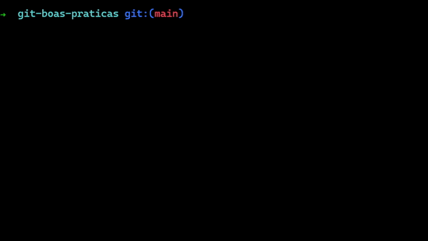

Boas Práticas Git
Commit
Os commits, que são feitos pelo comando git commit -m "mensagem", devem ter em suas mensagens descrição, de forma clara, do que foi feito, a fim de facilitar o entendimento para outras pessoas que estão participando do projeto.

Branches
As branches são ramificações em um ponto do código. Utilizaremos um fluxo estilo gitflow. Teremos 2 branches principais:
- main, que mantém a release oficial do projeto, que será mandado para produção.
- develop, que serve para integração das branches de features.
Para cada feature que for desenvolvida, deverá ser criada uma branch nova com o comando git checkout -b nome_branch com nome da mesma sendo referente à feature que será feita. Ex: criacao_navbar
Comentários
Sem entrar muito em boas práticas de programação, comentários em código antigo devem ser evitados, já que o próprio git mantém histórico das modificações.
GitLens
Uma extensão muito útil para o VsCode é o GitLens, que exibe as diferenças do código de um commit para o outro.